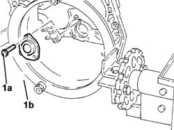

2110C20 SEALS FOR gearbox input shaft - Replace with gearbox removed
- Path
- Procedures > 21 GEARBOX > 2110 MANUAL GEARBOX AND DIFFERENTIAL > 2110C MANUAL GEARBOX AND DIFFERENTIAL COVERS AND GEARBOX CASINGS > 2110C20 SEALS FOR gearbox input shaft - Replace with gearbox removed
- Kind
- repair procedure (removal / refitting; the operation number is the code)
- Applies to
- engines: 2.0 TB, 2.4 20V, 2.4 JTD 10V, 2.4 JTD 20V; all production periods
- Interactive page
- https://sloeber94.github.io/elrnDB-lThss/en/#/78177
Applies to: engines: 2.0 TB, 2.4 20V, 2.4 JTD 10V, 2.4 JTD 20V; all production periods
 Removing
Removing
 Refitting
Refitting1. Undo the bolts (1a) and remove the main shaft seal and actuator/clutch (1b) complete with gasket.

Applies to: engines: 2.0 TB, 2.4 20V, 2.4 JTD 10V, 2.4 JTD 20V; all production periods
Refitting
Removing- Fit a new main shaft cover complete with gasket matching it with the clutch actuator fastening both to the recommended torque.
 | Value - daNm | Fastening | Component | Ø |
|---|---|---|---|---|
1a | 0.7 - 1.1 | Bolt | MANUAL GEARBOX/DIFF. INPUT SHAFT SEAL | M6 |